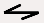
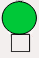

Chemical Aspects¶
Load - Run - Save models¶
Load a Kinetic Model¶
-
loadKineticModel.main()¶ This example illustrates loading, running, and saving a kinetic model defined in kkit format. It uses a default kkit model but you can specify another using the command line
python filename runtime solver.We use the gsl solver here. The model already defines a couple of plots and sets the runtime 20 secs.
Load an SBML Model¶
-
loadSbmlmodel.main()¶ This example illustrates loading, running of an SBML model defined in XML format. The model 00001-sbml-l3v1.xml is taken from l3v1 SBML testcase. Plots are setup. Model is run for 20sec. As a general rule we created model under ‘/path/model’ and plots under ‘/path/graphs’.
Load a CSpace Model¶
-
loadCspaceModel.main()¶ This example illustrates loading and running, a kinetic model defined in cspace format. We use the gsl solver here. The model already defines a couple of plots and sets the runtime to 3000 seconds.
Simple Examples¶
Set-up a kinetic solver and model¶
with Scripting¶
-
scriptGssaSolver.main()¶ This example illustrates how to set up a kinetic solver and kinetic model using the scripting interface. Normally this would be done using the Shell::doLoadModel command, and normally would be coordinated by the SimManager as the base of the entire model. This example creates a bistable model having two enzymes and a reaction. One of the enzymes is autocatalytic. The model is set up to run using Exponential Euler integration.
With something else¶
-
changeFuncExpression.main()¶ This example illustrates how to set up a kinetic solver and kinetic model using the scripting interface. Normally this would be done using the Shell::doLoadModel command, and normally would be coordinated by the SimManager as the base of the entire model. This example creates a bistable model having two enzymes and a reaction. One of the enzymes is autocatalytic. The model is set up to run using Exponential Euler integration.
Building a chemical Model from Parts¶
-
scriptKineticSolver.main()¶ This example illustrates how to set up a kinetic solver and kinetic model using the scripting interface. Normally this would be done using the Shell::doLoadModel command, and normally would be coordinated by the SimManager as the base of the entire model. This example creates a bistable model having two enzymes and a reaction. One of the enzymes is autocatalytic. The model is set up to run using Exponential Euler integration.
Cross-Compartment Reaction Systems¶
-
crossComptSimpleReac.main()¶ This example illustrates a simple cross compartment reaction:
a <===> b <===> c
Here each molecule is in a different compartment. The initial conditions are such that the end conc on all compartments should be 2.0. The time course depends on which compartment the Reac object is embedded in. The cleanest thing numerically and also conceptually is to have both reactions in the same compartment, in this case the middle one (compt1). The initial conditions have a lot of B. The equilibrium with C is fast and so C shoots up and passes B, peaking at about (2.5,9). This is also just about the crossover point. A starts low and slowly climbs up to equilibrate.
If we put reac0 in compt0 and reac1 in compt1, it behaves the same qualitiatively but now the peak is at around (1, 5.2)
This configuration of reactions makes sense from the viewpoint of having the reactions always in the compartment with the smaller volume, which is important if we need to have junctions where many small voxels talk to one big voxel in another compartment.
Note that putting the reacs in other compartments doesn’t work and in some combinations (e.g., reac0 in compt0 and reac1 in compt2) give numerical instability.
-
crossComptOscillator.main()¶ This example illustrates loading and running a reaction system that spans two volumes, that is, is in different compartments. It uses a kkit model file. You can tell if it is working if you see nice relaxation oscillations.
-
crossComptNeuroMesh.main()¶ This example illustrates how to define a kinetic model embedded in a NeuroMesh, and undergoing cross-compartment reactions. It is completely self-contained and does not use any external model definition files. Normally one uses standard model formats like SBML or kkit to concisely define kinetic and neuronal models. This example creates a simple reaction:
a <==> b <==> c
in which
a, b, and c are in the dendrite, spine head, and PSD respectively. The model is set up to run using the Ksolve for integration. Although a diffusion solver is set up, the diff consts here are set to zero. The display has two parts: Above is a line plot of concentration against compartment#. Below is a time-series plot that appears after # the simulation has ended. The plot is for the last (rightmost) compartment. Concs of a, b, c are plotted for both graphs.
-
crossComptSimpleReacGSSA.main()¶ This example illustrates a simple cross compartment reaction:
a <===> b <===> c
Here each molecule is in a different compartment. The initial conditions are such that the end conc on all compartments should be 2.0. The time course depends on which compartment the Reac object is embedded in. The cleanest thing numerically and also conceptually is to have both reactions in the same compartment, in this case the middle one (compt1). The initial conditions have a lot of B. The equilibrium with C is fast and so C shoots up and passes B, peaking at about (2.5,9). This is also just about the crossover point. A starts low and slowly climbs up to equilibrate.
If we put reac0 in compt0 and reac1 in compt1, it behaves the same qualitiatively but now the peak is at around (1, 5.2)
This configuration of reactions makes sense from the viewpoint of having the reactions always in the compartment with the smaller volume, which is important if we need to have junctions where many small voxels talk to one big voxel in another compartment.
Note that putting the reacs in other compartments doesn’t work and in some combinations (e.g., reac0 in compt0 and reac1 in compt2) give numerical instability.
Tweaking Parameters¶
-
tweakingParameters.main()¶ This example illustrates parameter tweaking. It uses a kinetic model for a relaxation oscillator, defined in kkit format. We use the gsl solver here. The model looks like this:
_________ | | V | M-----Enzyme---->M* All in compartment A |\ /| ^ | \___basal___/ | | | endo | | exo | _______ | | | \ | V V \ | M-----Enzyme---->M* All in compartment B \ /| \___basal___/
The way it works: We set the run off for a few seconds with the original model parameters. This version oscillates. Then we double the endo and exo forward rates and run it further to show that the period becomes nearly twice as fast. Then we restore endo and exo, and instead double the initial amounts of M. We run it further again to see what happens. This model takes several seconds to run.
Models’ Demonstration¶
Oscillation Model¶
-
slowFbOsc.main()¶ This example illustrates loading, and running a kinetic model for a delayed -ve feedback oscillator, defined in kkit format. The model is one by Boris N. Kholodenko from Eur J Biochem. (2000) 267(6):1583-8
This model has a high-gain MAPK stage, whose effects are visible whem one looks at the traces from successive stages in the plots. The upstream pools have small early peaks, and the downstream pools have large delayed ones. The negative feedback step is mediated by a simple binding reaction of the end-product of oscillation with an upstream activator.
We use the gsl solver here. The model already defines some plots and sets the runtime to 4000 seconds. The model does not really play nicely with the GSSA solver, since it involves some really tiny amounts of the MAPKKK.
Things to do with the model:
Look at model once it is loaded in:
moose.le( '/model' ) moose.showfields( '/model/kinetics/MAPK/MAPK' )
Behold the amplification properties of the cascade. Could do this by blocking the feedback step and giving a small pulse input.
Suggest which parameters you would alter to change the period of the oscillator:
Concs of various molecules, for example:
ras_MAPKKKK = moose.element( '/model/kinetics/MAPK/Ras_dash_MKKKK' ) moose.showfields( ras_MAPKKKK ) ras_MAPKKKK.concInit = 1e-5
Feedback reaction rates
Rates of all the enzymes:
for i in moose.wildcardFind( '/##[ISA=EnzBase]'): i.kcat *= 10.0
Bistability Models¶
MAPK feedback loop model¶
-
mapkFB.main()¶ This example illustrates loading, and running a kinetic model for a bistable positive feedback system, defined in kkit format. This is based on Bhalla, Ram and Iyengar, Science 2002.
The core of this model is a positive feedback loop comprising of the MAPK cascade, PLA2, and PKC. It receives PDGF and Ca2+ as inputs.
This model is quite a large one and due to some stiffness in its equations, it runs somewhat slowly.
The simulation illustrated here shows how the model starts out in a state of low activity. It is induced to ‘turn on’ when a a PDGF stimulus is given for 400 seconds. After it has settled to the new ‘on’ state, model is made to ‘turn off’ by setting the system calcium levels to zero for a while. This is a somewhat unphysiological manipulation!
Simple minimal bistable model¶
-
scaleVolumes.main()¶ This example illustrates how to run a model at different volumes. The key line is just to set the volume of the compartment:
compt.volume = vol
If everything else is set up correctly, then this change propagates through to all reactions molecules.
For a deterministic reaction one would not see any change in output concentrations. For a stochastic reaction illustrated here, one sees the level of ‘noise’ changing, even though the concentrations are similar up to a point. This example creates a bistable model having two enzymes and a reaction. One of the enzymes is autocatalytic. This model is set up within the script rather than using an external file. The model is set up to run using the GSSA (Gillespie Stocahstic systems algorithim) method in MOOSE.
To run the example, run the script
python scaleVolumes.pyand hit
enterevery cycle to see the outcome of stochastic calculations at ever smaller volumes, keeping concentrations the same.
Strongly bistable Model¶
-
strongBis.main()¶ This example illustrates loading, and running a kinetic model for a bistable system, defined in kkit format. Defaults to the deterministic gsl method, you can pick the stochastic one by
python filename gssaThe model starts out equally poised between sides b and c. Then there is a small molecular ‘tap’ to push it over to b. Then we apply a moderate push to show that it is now very stably in this state. it takes a strong push to take it over to c. Then it takes a strong push to take it back to b. This is a good model to use as the basis for running stochastically and examining how state stability is affected by changing volume.
Model of bidirectional synaptic plasticity¶
[showing bistable chemical switch]
-
bidirectionalPlasticity.main()¶ This is a toy model of synaptic bidirectional plasticity. The model has a small a bistable chemical switch, and a small set of reactions that decode calcium input. One can turn the switch on with short high calcium pulses (over 2 uM for about 10 sec). One can turn it back off again using a long, lower calcium pulse (0.2 uM, 2000 sec).
Reaction Diffusion Models¶
[Reaction-diffusion + transport in a tapering cylinder]
-
cylinderDiffusion.main()¶ This example illustrates how to set up a diffusion/transport model with a simple reaction-diffusion system in a tapering cylinder:
Molecule a diffuses with diffConst of 10e-12 m^2/s.Molecule b diffuses with diffConst of 5e-12 m^2/s.Molecule b also undergoes motor transport with a rate of 10e-6 m/sThus it ‘piles up’ at the end of the cylinder.Molecule c does not move: diffConst = 0.0Molecule d does not move: diffConst = 10.0e-12 but it is buffered.Because it is buffered, it is treated as non-diffusing.All molecules other than d start out only in the leftmost (first) voxel, with a concentration of 1 mM. d is present throughout at 0.2 mM, except in the last voxel, where it is at 1.0 mM.
The cylinder has a starting radius of 2 microns, and end radius of 1 micron. So when the molecule undergoing motor transport gets to the narrower end, its concentration goes up.
There is a little reaction in all compartments:
b + d <===> cAs there is a high concentration of d in the last compartment, when the molecule b reaches the end of the cylinder, the reaction produces lots of c.
Note that molecule a does not participate in this reaction.
The concentrations of all molecules are displayed in an animation.
-
cylinderMotor.main()¶ This example illustrates how to set up a transport model with four non-reacting molecules in a cylinder. Molecule a and b have a positive motorConst so they are are transported from soma (voxel 0) to the end of the cylinder. Molecules c and d have a negative motorConst so they are transported from the end of the cylinder to the soma. Rate of all motors is 1e-6 microns/sec. Pools a and c start out with all molecules at the soma, b and d start with all molecules at the end of the cylinder. Net effect is that only molecules a and d actually move. B and c stay put as their motors are pushing further toward their respective ends, and I assume all cells have sealed ends.
-
gssaCylinderDiffusion.main()¶ This example illustrates how to set up a diffusion/transport model with a simple reaction-diffusion system in a tapering cylinder:
Molecule a diffuses with diffConst of 10e-12 m^2/s.Molecule b diffuses with diffConst of 5e-12 m^2/s.Molecule b also undergoes motor transport with a rate of 10e-6 m/sThus it ‘piles up’ at the end of the cylinder.Molecule c does not move: diffConst = 0.0Molecule d does not move: diffConst = 10.0e-12 but it is buffered.Because it is buffered, it is treated as non-diffusing.All molecules other than d start out only in the leftmost (first) voxel, with a concentration of 1 mM. d is present throughout at 0.2 mM, except in the last voxel, where it is at 1.0 mM.
The cylinder has a starting radius of 2 microns, and end radius of 1 micron. So when the molecule undergoing motor transport gets to the narrower end, its concentration goes up.
There is a little reaction in all compartments:
b + d <===> cAs there is a high concentration of d in the last compartment, when the molecule b reaches the end of the cylinder, the reaction produces lots of c.
Note that molecule a does not participate in this reaction.
The concentrations of all molecules are displayed in an animation.
Neuronal Diffusion Reaction¶
-
rxdFuncDiffusion.main()¶ This example implements a reaction-diffusion like system which is bistable and propagates losslessly. It is based on the NEURON example rxdrun.py, but incorporates more compartments and runs for a longer time. The system is implemented in a function rather than as a proper system of chemical reactions. Please see rxdReacDiffusion.py for a variant that uses a reaction plus a function object to control its rates.
-
rxdReacDiffusion.main()¶ This example implements a reaction-diffusion like system which is bistable and propagates losslessly. It is based on the NEURON example rxdrun.py, but incorporates more compartments and runs for a longer time. The system is implemented as a hybrid of a reaction and a function which sets its rates. Please see rxdFuncDiffusion.py for a variant that uses just a function object to set up the system.
-
rxdFuncDiffusionStoch.main()¶ This example implements a reaction-diffusion like system which is bistable and propagates losslessly. It is based on the NEURON example rxdrun.py, but incorporates more compartments and runs for a longer time. The system is implemented in a function rather than as a proper system of chemical reactions. Please see rxdReacDiffusion.py for a variant that uses a reaction plus a function object to control its rates.
A Turing Model¶
-
TuringOneDim.makeModel()¶ This example illustrates how to set up a oscillatory Turing pattern in 1-D using reaction diffusion calculations. Reaction system is:
s ---a---> a // s goes to a, catalyzed by a. s ---a---> b // s goes to b, catalyzed by a. a ---b---> s // a goes to s, catalyzed by b. b -------> s // b is degraded irreversibly to s.
in sum, a has a positive feedback onto itself and also forms b. b has a negative feedback onto a. Finally, the diffusion constant for a is 1/10 that of b.
This chemical system is present in a 1-dimensional (cylindrical) compartment. The entire reaction-diffusion system is set up within the script.
A Spatial Bistable Model¶
Reaction Diffusion in Neurons¶
-
reacDiffConcGradient.main()¶ This example shows how to maintain a conc gradient against diffusion
compt0 compt1 compt 2 a ......... a .......... a [Diffusion between compts] |\ |\ | | | | [Reacs within compts] \| \| \| b0 <------->b1 <--------b2 [Reacs between compts] 4x 2x 1x [Ratios of vols of compts]
If there is no diffusion then the ratio of concs should be 1:10:100 If there is no x-compt reac, then clearly the concs should all be the same, in this case they should be 2.0. If both are happening then the final concs are 1.4, 2.5, 3.4.
-
reacDiffBranchingNeuron.main()¶ This example illustrates how to define a kinetic model embedded in the branching pseudo 1-dimensional geometry of a neuron. This means that diffusion only happens along the axis of dendritic segments, not radially from inside to outside a dendrite, nor tangentially around the dendrite circumference. The model oscillates in space and time due to a Turing-like reaction-diffusion mechanism present in all compartments. For the sake of this demo, the initial conditions are set to be slightly different on one of the terminal dendrites, so as to break the symmetry and initiate oscillations. This example uses an external model file to specify a binary branching neuron. This model does not have any spines. The electrical model is used here purely for the geometry and is not part of the computations. In this example we build an identical chemical model throughout the neuronal geometry, using the makeChemModel function. The model is set up to run using the Ksolve for integration and the Dsolve for handling diffusion.
The display has two parts:
- Animated pseudo-3D plot of neuronal geometry, where each point represents a diffusive voxel and moves in the y-axis to show changes in concentration.
- Time-series plot that appears after the simulation has ended. The plots are for the first and last diffusive voxel, that is, the soma and the tip of one of the apical dendrites.
-
reacDiffBranchingNeuron.makeChemModel(compt)¶ This function sets up a simple oscillatory chemical system within the script. The reaction system is:
s ---a---> a // s goes to a, catalyzed by a. s ---a---> b // s goes to b, catalyzed by a. a ---b---> s // a goes to s, catalyzed by b. b -------> s // b is degraded irreversibly to s.
in sum, a has a positive feedback onto itself and also forms b. b has a negative feedback onto a. Finally, the diffusion constant for a is 1/10 that of b.
-
reacDiffSpinyNeuron.main()¶ This example illustrates how to define a kinetic model embedded in the branching pseudo-1-dimensional geometry of a neuron. The model oscillates in space and time due to a Turing-like reaction-diffusion mechanism present in all compartments. For the sake of this demo, the initial conditions are set up slightly different on the PSD compartments, so as to break the symmetry and initiate oscillations in the spines. This example uses an external electrical model file with basal dendrite and three branches on the apical dendrite. One of those branches has a dozen or so spines. In this example we build an identical model in each compartment, using the makeChemModel function. One could readily define a system with distinct reactions in each compartment. The model is set up to run using the Ksolve for integration and the Dsolve for handling diffusion. The display has four parts:
- animated line plot of concentration against main compartment#.
- animated line plot of concentration against spine compartment#.
- animated line plot of concentration against psd compartment#.
- time-series plot that appears after the simulation has ended. The plot is for the last (rightmost) compartment.
-
reacDiffSpinyNeuron.makeChemModel(compt)¶ This function setus up a simple oscillatory chemical system within the script. The reaction system is:
s ---a---> a // s goes to a, catalyzed by a. s ---a---> b // s goes to b, catalyzed by a. a ---b---> s // a goes to s, catalyzed by b. b -------> s // b is degraded irreversibly to s.
in sum, a has a positive feedback onto itself and also forms b. b has a negative feedback onto a. Finally, the diffusion constant for a is 1/10 that of b.
-
diffSpinyNeuron.main()¶ This example illustrates and tests diffusion embedded in the branching pseudo-1-dimensional geometry of a neuron. An input pattern of Ca stimulus is applied in a periodic manner both on the dendrite and on the PSDs of the 13 spines. The Ca levels in each of the dend, the spine head, and the spine PSD are monitored. Since the same molecule name is used for Ca in the three compartments, these are automagially connected up for diffusion. The simulation shows the outcome of this diffusion. This example uses an external electrical model file with basal dendrite and three branches on the apical dendrite. One of those branches has the 13 spines. The model is set up to run using the Ksolve for integration and the Dsolve for handling diffusion. The timesteps here are not the defaults. It turns out that the chem reactions and diffusion in this example are sufficiently fast that the chemDt has to be smaller than default. Note that this example uses rates quite close to those used in production models. The display has four parts:
- animated line plot of concentration against main compartment#.
- animated line plot of concentration against spine compartment#.
- animated line plot of concentration against psd compartment#.
- time-series plot that appears after the simulation has ended.
-
diffSpinyNeuron.makeChemModel(compt, doInput)¶ This function setus up a simple chemical system in which Ca input comes to the dend and to selected PSDs. There is diffusion between PSD and spine head, and between dend and spine head.
:: Ca_input ——> Ca // in dend and spine head only.
Manipulating Chemical Models¶
Running with different numerical methods¶
-
switchKineticSolvers.main()¶ At zero order, you can select the solver you want to use within the function moose.loadModel( filename, modelpath, solver ). Having loaded in the model, you can change the solver to use on it. This example illustrates how to assign and change solvers for a kinetic model. This process is necessary in two situations:
- If we want to change the numerical method employed, for example, from deterministic to stochastic.
- If we are already using a solver, and we have changed the reaction network by adding or removing molecules or reactions.
Note that we do not have to change the solvers if the volume or reaction rates change. In this example the model is loaded in with a gsl solver. The sequence of solver calculations is:
- gsl
- ee
- gsl
- gssa
- gsl
If you’re removing the solvers, you just delete the stoichiometry object and the associated ksolve/gsolve. Should there be diffusion (a dsolve)then you should delete that too. If you’re building the solvers up again, then you must do the following steps in order:
- build up the ksolve/gsolve and stoich (any order)
- Assign stoich.ksolve
- Assign stoich.path.
See the Reaction-diffusion section should you want to do diffusion as well.
Changing volumes¶
-
scaleVolumes.main() This example illustrates how to run a model at different volumes. The key line is just to set the volume of the compartment:
compt.volume = vol
If everything else is set up correctly, then this change propagates through to all reactions molecules.
For a deterministic reaction one would not see any change in output concentrations. For a stochastic reaction illustrated here, one sees the level of ‘noise’ changing, even though the concentrations are similar up to a point. This example creates a bistable model having two enzymes and a reaction. One of the enzymes is autocatalytic. This model is set up within the script rather than using an external file. The model is set up to run using the GSSA (Gillespie Stocahstic systems algorithim) method in MOOSE.
To run the example, run the script
python scaleVolumes.pyand hit
enterevery cycle to see the outcome of stochastic calculations at ever smaller volumes, keeping concentrations the same.
Feeding tabulated input to a model¶
-
analogStimTable.main()¶ Example of using a StimulusTable as an analog signal source in a reaction system. It could be used similarly to give other analog inputs to a model, such as a current or voltage clamp signal.
This demo creates a StimulusTable and assigns it half a sine wave. Then we assign the start time and period over which to emit the wave. The output of the StimTable is sent to a pool a, which participates in a trivial reaction:
table ----> a <===> b
The output of a and b are recorded in a regular table for plotting.
Finding steady states¶
-
findChemSteadyState.getState(ksolve, state)¶ This function finds a steady state starting from a random initial condition that is consistent with the stoichiometry rules and the original model concentrations.
-
findChemSteadyState.main()¶ This example sets up the kinetic solver and steady-state finder, on a bistable model of a chemical system. The model is set up within the script. The algorithm calls the steady-state finder 50 times with different (randomized) initial conditions, as follows:
- Set up the random initial condition that fits the conservation laws
- Run for 2 seconds. This should not be mathematically necessary, but for obscure numerical reasons it makes it much more likely that the steady state solver will succeed in finding a state.
- Find the fixed point
- Print out the fixed point vector and various diagnostics.
- Run for 10 seconds. This is completely unnecessary, and is done here just so that the resultant graph will show what kind of state has been found.
After it does all this, the program runs for 100 more seconds on the last found fixed point (which turns out to be a saddle node), then is hard-switched in the script to the first attractor basin from which it runs for another 100 seconds till it settles there, and then is hard-switched yet again to the second attractor and runs for 400 seconds.
Looking at the output you will see many features of note:
- the first attractor (stable point) and the saddle point (unstable fixed point) are both found quite often. But the second attractor is found just once. It has a very small basin of attraction.
- The values found for each of the fixed points match well with the values found by running the system to steady-state at the end.
- There are a large number of failures to find a fixed point. These are found and reported in the diagnostics. They show up on the plot as cases where the 10-second runs are not flat.
If you wanted to find fixed points in a production model, you would not need to do the 10-second runs, and you would need to eliminate the cases where the state-finder failed. Then you could identify the good points and keep track of how many of each were found.
There is no way to guarantee that all fixed points have been found using this algorithm! If there are points in an obscure corner of state space (as for the singleton second attractor convergence in this example) you may have to iterate very many times to find them.
You may wish to sample concentration space logarithmically rather than linearly.
-
findChemSteadyState.makeModel()¶ This function creates a bistable reaction system using explicit MOOSE calls rather than load from a file
Making a dose-response curve¶
-
chemDoseResponse.main()¶ This example builds a dose-response of a bistable model of a chemical system. It uses the kinetic solver Ksolve and the steady-state finder SteadyState. The model is set up within the script.
The basic approach is to increment the control variable, a in this case, while monitoring b. The algorithm marches through a series of values of the buffered pool a and measures resultant values of pool b. At each cycle the algorithm calls the steady-state finder. Since a is incremented only a small amount on each step, each new steady state is (usually) quite close to the previous one. The exception is when there is a state transition.
Here we plot three dose-response curves to illustrate the bistable nature of the system.
On the upward going curve in blue, a starts low. Here, b follows the low arm of the curve and then jumps up to the high value at roughly log( [a] ) = -0.55.
On the downward going curve in green, b follows the high arm of the curve forming a nice hysteretic loop. Eventually b has to fall to the low state at about log( [a] ) = -0.83
Through nasty concentration manipulations, we find the third arm of the curve, which tracks the unstable fixed point. This is in red. We find this arm by setting an initial point close to the unstable fixed point, which the steady-state finder duly locates. We then follow a dose-response curve as with the other arms of the curve.
Note that the steady-state solver doesn’t always succeed in finding a good solution, despite moving only in small steps. Nevertheless the resultant curves are smooth because it gives up pretty close to the correct value, simply because the successive points are close together. Overall, the system is pretty robust despite the core root-finder computations in GSL being temperamental.
In doing a production dose-response series you may wish to sample concentration space logarithmically rather than linearly.
-
chemDoseResponse.makeModel()¶ This function creates a bistable reaction system using explicit MOOSE calls rather than load from a file. The reaction is:
a ---b---> 2b # b catalyzes a to form more of b. 2b ---c---> a # c catalyzes b to form a. a <======> 2b # a interconverts to b.
Transport in branching dendritic tree¶
-
transportBranchingNeuron.main()¶ transportBranchingNeuron: This example illustrates bidirectional transport embedded in the branching pseudo 1-dimensional geometry of a neuron. This means that diffusion and transport only happen along the axis of dendritic segments, not radially from inside to outside a dendrite, nor tangentially around the dendrite circumference. In this model there is a molecule a starting at the soma, which is transported out to the dendrites. There is another molecule, b, which is initially present at the dendrite tips, and is transported toward the soma. This example uses an external model file to specify a binary branching neuron. This model does not have any spines. The electrical model is used here purely for the geometry and is not part of the computations. In this example we build trival chemical model just having molecules a and b throughout the neuronal geometry, using the makeChemModel function. The model is set up to run using the Ksolve for integration and the Dsolve for handling diffusion.
The display has three parts:
- Animated pseudo-3D plot of neuronal geometry, where each point represents a diffusive voxel and moves in the y-axis to show changes in concentration of molecule a.
- Similar animated pseudo-3D plot for molecule b.
- Time-series plot that appears after the simulation has ended. The plots are for the first and last diffusive voxel, that is, the soma and the tip of one of the apical dendrites.
Interface for chemical kinetic models in MOOSEGUI¶
Upinder Bhalla, Harsha Rani
Nov 8 2016.
Introduction¶
Kinetikit 12 is a graphical interface for doing chemical kinetic modeling in MOOSE. It is derived in part from Kinetikit, which was the graphical interface used in GENESIS for similar models. Kinetikit, also known as kkit, was at version 11 with GENESIS. Here we start with Kinetikit 12.
**TODO** What are chemical kinetic models?¶
Much of neuronal computation occurs through chemical signaling. For example, many forms of synaptic plasticity begin with calcium influx into the synapse, followed by calcium binding to calmodulin, and then calmodulin activation of numerous enzymes. These events can be represented in chemical terms:
4 Ca2+ + CaM <===> Ca4.CaM
Such chemical equations can be modeled through standard Ordinary Differential Equations, if we ignore space:
d[Ca]/dt = −4Kf ∗ [Ca]4 ∗ [CaM] + 4Kb ∗ [Ca4.CaM] d[CaM]/dt = −Kf ∗ [Ca]4 ∗ [CaM] + Kb ∗ [Ca4.CaM] d[Ca4.CaM]/dt = Kf ∗ [Ca]4 ∗ [CaM] − Kb ∗ [Ca4.CaM]
MOOSE models these chemical systems. This help document describes how to do such modelling using the graphical interface, Kinetikit 12.
Levels of model¶
Chemical kinetic models can be simple well-stirred (or point) models, or they could have multiple interacting compartments, or they could include space explicitly using reaction-diffusion. In addition such models could be solved either deterministically, or using a stochastic formulation. At present Kinetikit handles compartmental models but does not compute diffusion within the compartments, though MOOSE itself can do this at the script level. Kkit12 will do deterministic as well as stochastic chemical calculations.
Numerical methods¶
- Deterministic: Adaptive timestep 5th order Runge-Kutta-Fehlberg from the GSL (GNU Scientific Library).
- Stochastic: Optimized Gillespie Stochastic Systems Algorithm, custom implementation.
Using Kinetikit 12¶
Overview¶
- Load models using ‘File -> Load model’. A reaction schematic for the chemical system appears in the ‘Editor view’ tab.
- From ‘Editor view’ tab
- View parameters by clicking on icons, and looking at entries in ‘Properties’ table to the right.
- Edit parameters by changing their values in the ‘Properties’ table.
- From ‘Run View’
- Pools can be plotted by clicking on their icons and dragging the icons onto the plot Window. Presently only concentration v/s time is plottable.
- Select simulation, diffusin dt’s along updateInterval for plot and Gui with numerical method using options under ‘Preferences’ button in simulation control.
- Run model using ‘Run’ button.
- Save plots image using the icons at the top of the ‘Plot Window’ or right click on plot to Export to csv.
Most of these operations are detailed in other sections, and are shared with other aspects of the MOOSE simulation interface. Here we focus on the Kinetikit-specific items.
Model layout and icons¶
When you are in the ‘Editor View’ tab you will see a collection of icons, arrows, and grey boxes surrounding these. This is a schematic of the reaction scheme being modeled. You can view and change parameters, and change the layout of the model.
Resizing the model layout and icons:
- Zoom:Â Â Comma and period keys. Alternatively, the mouse scroll wheel or vertical scroll line on the track pad will cause the display to zoom in and out.
- Pan:Â Â The arrow keys move the display left, right, up, and down.
- Entire Model View:Â Â Pressing the ‘a’ key will fit the entire model into the entire field of view.
- Resize Icons:Â Â Angle bracket keys, that is, ‘<’ and ‘>’ or ‘+’ and ‘-‘. This resizes the icons while leaving their positions on the screen layout more or less the same.
- Original Model View:Â Â Pressing the ‘A’ key (capital ‘A’) will revert to the original model view including the original icon scaling.
Compartment¶
The compartment in moose is usually a contiguous domain in which a certain set of chemical reactions and molecular species occur. The definition is very closely related to that of a cell-biological compartment. Examples include the extracellular space, the cell membrane, the cytosol, and the nucleus. Compartments can be nested, but of course you cannot put a bigger compartment into a smaller one.
- Icon: Grey boundary around a set of reactions.
- Moving Compartments: Click and drag on the boundary.
- Resizing Compartment boundary: Happens automatically when contents are repositioned, so that the boundary just contains contents.
- Compartment editable parameters:
- ‘name’: The name of the compartment.
- ‘size’: This is the volume, surface area or length of the compartment, depending on its type.
- Compartment fixed parameters:
- ‘numDimensions’: This specifies whether the compartment is a volume, a 2-D surface, or if it is just being represented as a length.
Pool¶
This is the set of molecules of a given species within a compartment. Different chemical states of the same molecule are in different pools.
- Icon:
 Colored rectangle with pool name in it.
Colored rectangle with pool name in it. - Moving pools: Click and drag.
- Pool editable parameters:
name: Name of the pool
n: Number of molecules in the pool
nInit: Initial number of molecules in the pool. ‘n’ gets set to this value when the ‘reinit’ operation is done.
conc: Concentration of the molecules in the pool.
conc = n * unit_scale_factor / (N<sub>A</sub> * vol)concInit: Initial concentration of the molecules in the pool. ‘conc’ is set to this value when the ‘reinit’ operation is done.
concInit = nInit * unit_scale_factor / (N<sub>A</sub> * vol)
- Pool fixed parameters
- size: Derived from the compartment that holds the pool. Specifies volume, surface area or length of the holding compartment.
Buffered pools¶
Some pools are set to a fixed ‘n’, that is number of molecules, and therefore a fixed concentration, throughout a simulation. These are buffered pools.
- Icon: Colored rectangle with pool name in it.
- Moving Buffered pools: Click and drag.
- Buffered Pool editable parameters
name: Name of the pool
nInit: Fixed number of molecules in the pool. ‘n’ gets set to this value throughout the run.
concInit: Fixed concentration of the molecules in the pool. ‘conc’ is set to this value throughout the run.
concInit = nInit * unit_scale_factor / (N<sub>A</sub> * vol)
- Pool fixed parameters:
- n: Number of molecules in the pool. Derived from ‘nInit’.
- conc: Concentration of molecules in the pool. Derived from ‘concInit’.
- size: Derived from the compartment that holds the pool. Specifies volume, surface area or length of the holding compar’tment.
Reaction¶
These are conversion reactions between sets of pools. They are reversible, but you can set either of the rates to zero to get irreversibility. In the illustration below, ‘D’ and ‘A’ are substrates, and ‘B’ is the product of the reaction. This is indicated by the direction of the green arrow.
- Icon:  Reversible reaction arrow.
- Moving Reactions: Click and drag.
- Reaction editable parameters:
- Name : Name of reaction
- K:sub:`f` : ‘Forward rate’ of reaction, in ‘concentration/time’ units. This is the normal way to express and manipulate the reaction rate.
- k:sub:`f` : Forward rate of reaction, in ‘number/time’ units. This is used internally for computations, but is volume-dependent and should not be used to manipulate the reaction rate unless you really know what you are doing.
- K:sub:`b` : Backward rate’ of reaction, in ‘concentration/time’ units. This is the normal way to express and manipulate the reaction rate.
- k:sub:`b` : Backward rate of reaction, in ‘number/time’ units. This is used internally for computations, but is volume-dependent and should not be used to manipulate the reaction rate unless you really know what you are doing.
- Reaction fixed parameters:
- numSubstrates: Number of substrates molecules.
- numProducts: Number of product molecules.
Mass-action enzymes¶
These are enzymes that model the chemical equation’s
E + S <===> E.S -> E + P
Note that the second reaction is irreversible. Note also that mass-action enzymes include a pool to represent the ‘E.S’ (enzyme-substrate) complex. In the example below, the enzyme pool is named ‘MassActionEnz’, the substrate is ‘C’, and the product is ‘E’. The direction of the enzyme reaction is indicated by the red arrows.

- Icon:  Colored ellipse atop a small square. The ellipse represents the enzyme. The small square represents ‘E.S’, the enzyme-substrate complex. The ellipse icon has the same color as the enzyme pool ‘E’. It is connected to the enzyme pool ‘E’ with a straight line of the same color.
The ellipse icon sits on a continuous, typically curved arrow in red, from the substrate to the product.
A given enzyme pool can have any number of enzyme activities, since the same enzyme might catalyze many reactions.
- Moving Enzymes: Click and drag on the ellipse.
- Enzyme editable parameters
- name : Name of enzyme.
- K:sub:`m` : Michaelis-Menten value for enzyme, in ‘concentration’ units.
- k:sub:`cat` : Production rate of enzyme, in ‘1/time’ units. Equal to k3, the rate of the second, irreversible reaction.
- k1 : Forward rate of the E+S reaction, in number and ‘1/time’ units. This is what is used in the internal calculations.
- k2 : Backward rate of the E+S reaction, in ‘1/time’ units. Used in internal calculations.
- k3 : Forward rate of the E.S -> E + P reaction, in ‘1/time’ units. Equivalent to kcat. Used in internal calculations.
- ratio : This is equal to k2/k:sub:3. Needed to define the internal rates in terms of Km and kcat. I usually use a value of 4.
- Enzyme-substrate-complex editable parameters: These are identica’l to those of any other pool.
name: Name of the E.S complex. Defaults to **_cplx**.
n: Number of molecules in the pool
nInit: Initial number of molecules in the complex. ‘n’ gets set to this value when the ‘reinit’ operation is done.
conc: Concentration of the molecules in the pool.
conc = n * unit_scale_factor / (N<sub>A</sub> * vol)concInit: Initial concentration of the molecules in the pool. ‘conc’ is set to this value when the ‘reinit’ operation is done.
concI'nit = nInit * unit_scale_factor / (N<sub>A</sub> * vol)
- Enzyme-substrate-complex fixed parameters:
- size: Derived from the compartment that holds the pool. Specifies volume, surface area or length of the holding compartment. Note that the Enzyme-substrate-complex is assumed to be in the same compartment as the enzyme molecule.
Michaelis-Menten Enzymes¶
These are enzymes that obey the Michaelis-Menten equation
V = V<sub>max</sub> * [S] / ( K<sub>m</sub> + [S] ) = k<sub>cat</sub> * [Etot] * [S] / ( K<sub>m</sub> + [S] )
where
- Vmax is the maximum rate of the enzyme
- [Etot] is the total amount of the enzyme
- Km is the Michaelis-Menten constant
- S is the substrate.
Nominally these enzymes model the same chemical equation as the mass-action enzyme’:
E + S <===> E.S -> E + P
but they make the assumption that the E.S is in a quasi-steady-state with E and S, and they also ignore sequestration of the enzyme into the complex. So there is no representation of the E.S complex. In the example below, the enzyme pool is named MM_Enz, the substrate is E, and the product is P. The direction of the enzyme reaction is indicated by the red arrows.
- Icon:
 Colored ellipse. The ellipse represents the enzyme
Colored ellipse. The ellipse represents the enzyme
The ellipse icon has the same color as the enzyme ‘MM_Enz’. It is connected to the enzyme pool ‘MM_Enz’ with a straight line of the same color. The ellipse icon sits on a continuous, typically curved arrow in red, from the substrate to the product. A given enzyme pool can have any number of enzyme activities, since the same enzyme might catalyze many reactions.
- Moving Enzymes: Click and drag.
- Enzyme editable parameters:
- name: Name of enzyme.
- Km: Michaelis-Menten value for enzyme, in ‘concentration’ units.
- kcat: Production rate of enzyme, in ‘1/time’ units. Equal to k3, the rate of the second, irreversible reaction.

Model operations¶
Loading models: ‘File -> Load Model -> select from dialog’. This operation makes the previously loaded model disable and loads newly selected models in ‘Model View’‘
New: **‘File -> New -> Model name **. This opens a empty widget for model building
Saving models: ‘File -> Save Model -> select from dialog’.
Changing numerical methods: ‘Preference->Chemical tab’ item from Simulation Control. Currently supports: - Runge Kutta: This is the Runge-Kutta-Fehlberg implementation from the GNU Scientific Library (GSL). It is a fifth order variable timestep explicit method. Works well for most reaction systems except if they have very stiff reactions. - Gillespie: Optimized Gillespie stochastic systems algorithm, custom implementation. This uses variable timesteps internally.
Note that it slows down with increasing numbers of molecules in each pool. It also slows down, but not so badly, if the number of reactions goes up.
- Exponential Euler:This methods computes the solution of partial and ordinary differential equations.
Model building¶
- The Edit Widget includes various menu options and model icons on the top. Use the mouse buttton to click and drag icons from toolbar to Edit Widget, two things will happen, icon will appear in the editor widget and a object editor will pop up with lots of parameters with respect to moose object.
Rules:
* Compartment has to be created firstly(At present only single compartment model is allowed)
* Enzyme should be dropped on a pool as parent
* function should be dropped on buffPool for output
Note:
* Drag in pool's and reaction on to the editor widget, now one can set up a reaction.
* Click on mooseObject one can find a little arrow on the top right corner of the object, drag from this little arrow to any object for connection. <br>E.g pool to reaction and reaction to pool. Specific connection type gets specific colored arrow. E.g. Green color arrow for specifying connection between reactant and product for reaction.
* Clicking on the object one can rearrange object for clean layout.
* Second order reaction can also be done by repeating the connection over again
* Each connection can be deleted and using rubberband selection each moose object can be deleted
- From run widget, pools are draggable to plot window for plotting. (Currently conc is plotted as default field) Plots are color-coded as per in model.
- Model can be run by clicking start button. One can stop button in mid-stream and start up again without affectiong the calculations. The reset button clears the simulation.
Tutorials¶
Deterministic Simulation¶
Stochastic Simulation¶
Finding Steady State (CSpace)¶
-
cspaceSteadyState.main()¶ This example sets up the kinetic solver and steady-state finder, on a bistable model. It looks for the fixed points 100 times, as follows: - Set up the random initial condition that fits the conservation laws - Run for 2 seconds. This should not be mathematically necessary, but
for obscure numerical reasons it makes it much more likely that the steady state solver will succeed in finding a state.- Find the fixed point
- Print out the fixed point vector and various diagnostics.
- Run for 10 seconds. This is completely unnecessary, and is done here just so that the resultant graph will show what kind of state has been found.
After it does all this, the program runs for 100 more seconds on the last found fixed point (which turns out to be a saddle node), then is hard-switched in the script to the first attractor basin from which it runs for another 100 seconds till it settles there, and then is hard-switched yet again to the second attractor and runs for 100 seconds. Looking at the output you will see many features of note: - the first attractor (stable point) and the saddle point
(unstable fixed point) are both found quite often. But the second attractor is found just once. Has a very small basin of attraction.- The values found for each of the fixed points match well with the values found by running the system to steady-state at the end.
- There are a large number of failures to find a fixed point. These are found and reported in the diagnostics. They show up on the plot as cases where the 10-second runs are not flat.
If you wanted to find fixed points in a production model, you would not need to do the 10-second runs, and you would need to eliminate the cases where the state-finder failed. Then you could identify the good points and keep track of how many of each were found. There is no way to guarantee that all fixed points have been found using this algorithm! You may wish to sample concentration space logarithmically rather than linearly.
Building Simple Reaction Model¶
Define a kinetic model using the scripting¶
-
scriptKineticModel.main()¶ This example illustrates how to define a kinetic model using the scripting interface. Normally one uses standard model formats like SBML or kkit to concisely define kinetic models, but in some cases one would like to modify the model through the script. This example creates a bistable model having two enzymes and a reaction. One of the enzymes is autocatalytic. The model is set up to run using default Exponential Euler integration. The snippet scriptKineticSolver.py uses the much better GSL Runge-Kutta-Fehlberg integration scheme on this same model.